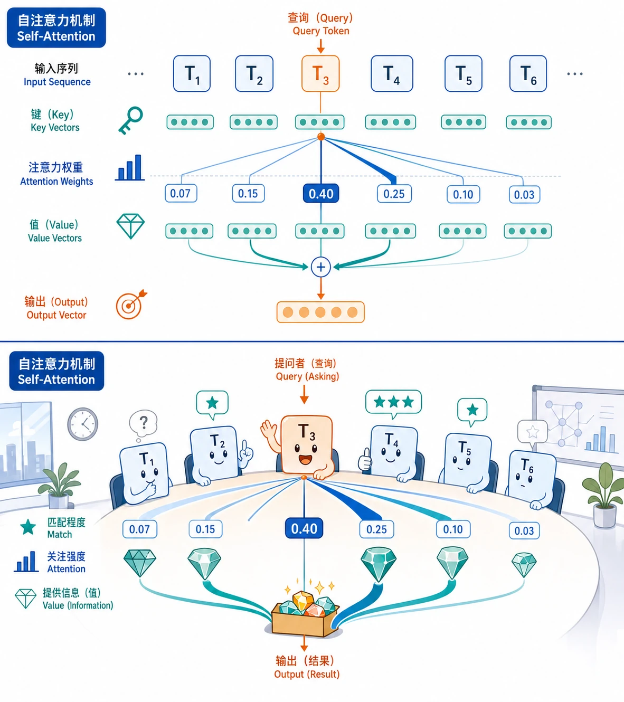

Self-Attention 与 Multi-Head Attention
一句话内部如何互相看
Self-Attention：一句话内部互相看
普通注意力常见于"解码器看编码器"：输出序列去看输入序列。
Self-Attention（自注意力）更进一步：同一个序列内部，每个 token 都可以看其他 token。
例如句子：
小明把书放进书包，因为他明天要用。"他"要理解自己指谁，就需要回头看"小明"。Self-Attention 让每个位置都能动态选择该看哪些位置。

Multi-Head：别只用一种眼光看句子
一句话里的关系不止一种：
- 指代关系："他" 指向 "小明"
- 语法关系："放进" 连接 "书" 和 "书包"
- 语义关系："明天要用" 解释为什么放书
单头注意力像只戴一副眼镜；多头注意力像同时戴多副专业眼镜。每个头可以关注不同关系，最后再合并。
Self-Attention 与多头注意力
1. Self-Attention 的定义
给定输入序列矩阵 $X$，通过三组线性变换得到：
然后计算：
因为 Q、K、V 都来自同一个 $X$，所以叫 Self-Attention。
直觉：
- 每个 token 生成自己的 Query，表示"我想找什么"。
- 每个 token 也生成 Key，表示"我能被怎样找到"。
- 每个 token 的 Value 是"如果别人关注我，我贡献什么内容"。
2. Self-Attention vs Cross-Attention
| 类型 | Q 来源 | K/V 来源 | 典型场景 |
|---|---|---|---|
| Self-Attention | 当前序列 | 当前序列 | 编码器内部、解码器内部 |
| Cross-Attention | 解码器当前状态 | 编码器输出 | 解码器读取输入序列信息 |
一句话区分：
- Self-Attention：自己读自己。
- Cross-Attention：输出端回头读输入端。
3. Multi-Head Attention
多头注意力不是把一个注意力算得更大，而是把表示空间拆成多个子空间，分别计算注意力。
流程：
- 把输入投影成多组 Q/K/V。
- 每组独立计算注意力，得到一个 head。
- 把所有 head 拼接起来。
- 再经过一次线性变换融合。
公式：
多头的价值在于表达多样性：不同头可以学习不同关系，而不是所有关系挤在一个注意力分布里。
4. 因果掩码：生成时不能偷看未来
在 GPT 这类自回归模型中，生成第 $t$ 个 token 时，只能看第 $1$ 到 $t$ 个位置，不能看未来答案。
因此需要因果掩码（Causal Mask）：
第 1 个 token：只能看 1
第 2 个 token：只能看 1,2
第 3 个 token：只能看 1,2,3
...如果没有掩码，训练时模型会看到标准答案后面的 token，相当于考试偷看答案，损失会虚假地很低，但生成时马上露馅。
5. Self-Attention 的代价
Self-Attention 需要计算所有 token 两两关系。如果序列长度是 $n$，关系数量大约是 $n^2$。
这带来两个后果：
- 短中序列上，Self-Attention 非常强，因为任意位置可以直接交互。
- 超长序列上，成本会迅速升高，因此后续会出现各种高效注意力和长文本优化方法。
这些优化不改变本章核心概念：注意力先算相关性，再按相关性汇总信息。
常见误区
误区 1：多头注意力就是多个模型投票。
不是。多个头是在同一个模型内部学习不同关系，最后融合成一个表示。
误区 2：Self-Attention 自动知道词序。
不知道。Self-Attention 本身对顺序不敏感，必须配合位置编码。
误区 3：因果掩码只在推理时需要。
训练时也需要。否则模型会学会偷看未来 token。
本节小结
| 概念 | 一句话总结 |
|---|---|
| Self-Attention | 同一序列内部互相查看 |
| Cross-Attention | 一个序列读取另一个序列的信息 |
| Multi-Head | 多组注意力并行关注不同关系 |
| Causal Mask | 防止生成模型看到未来 token |
| 二次复杂度 | 标准注意力成本随序列长度平方增长 |
下一篇：Transformer 架构——把注意力、前馈网络、残差连接和归一化组合起来，就是 Transformer。